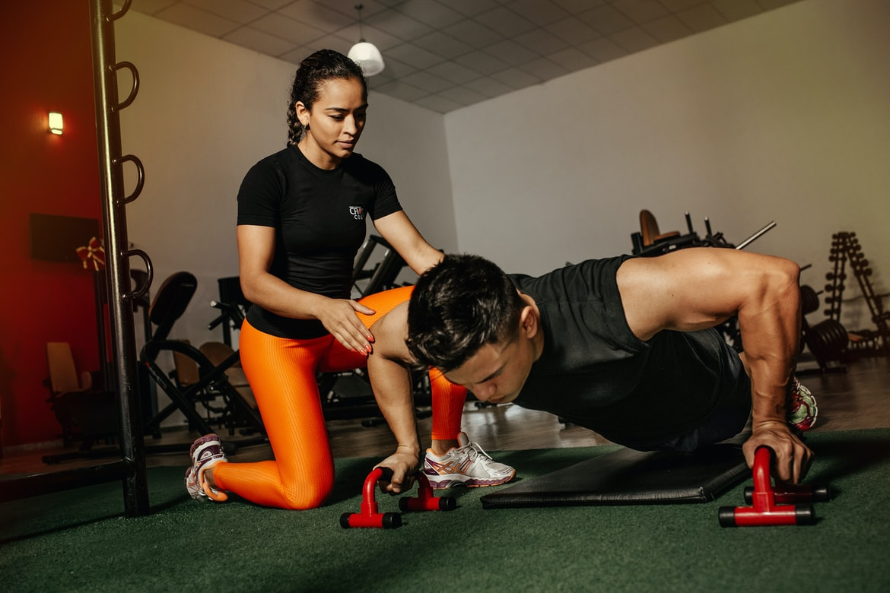

1. Mitä tilannekuva kertoo?

2. Mitä tilannekuva kertoo?

3. Mitä tilannekuva kertoo?

4. Mitä tilannekuva kertoo?

5. Mitä tilannekuva kertoo?
6. Mitä tilannekuva kertoo?
7. Mitä tilannekuva kertoo?
8. Mitä tilannekuva kertoo?

9. Mitä tilannekuva kertoo?

10. Mitä tilannekuva kertoo?
Palaa takaisin
Pisteet / 20p.